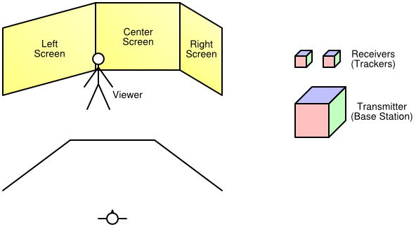
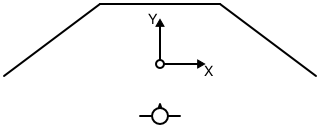
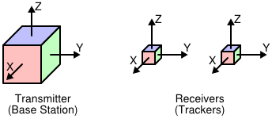
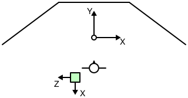
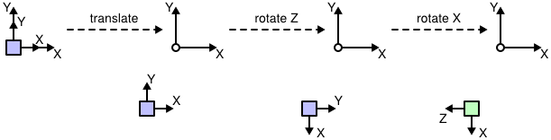

Setting up and Calibrating a Vrui VR Environment
One of the most time-consuming steps in installing a VR environment is to properly calibrate the display system, i.e., screens and viewers, and the input system, i.e., 6-DOF tracking devices, with the physical coordinate system used by Vrui and with each other. The following text serves as a step-by-step guide on how to get to a working system, while ignoring some of Vrui's flexibility for the sake of simplicity. The example VR environment used in this guide is a walk-in environment with three screens set up as a "fan," and an electromagnetic 6-DOF tracking system, e.g., a Polhemus Fastrack or an Ascension Flock of Birds, with two trackers, one used as head tracker, the other one attached to some input device. Diagrams of the environment and the tracking system are shown in Figure 1. The steps presented in this guide apply to other types of environments as well, with the obvious changes to number of screens, screen position/size, tracking system, etc.
|  |
| Figure 1: The example VR environment, consisting of three 10' x 8' screens and a tracking system with two receivers. Top left: isometric view of VR environment. Bottom left: plan view of VR environment. Right: components of tracking system. |
Choosing a physical coordinate system
The first step in setting up a VR environment (after the display system hardware has been installed) is to decide on a physical coordinate system. In Vrui, the choice of physical coordinate system is completely arbitrary -- the X axis could be chosen to point upwards, and the origin could be in Mekka, as long as everything is consistent, but to keep the discussion simple we will use a coordinate system that is naturally aligned with the display system. In this case, we position the origin on the floor, in the middle of the walkable space between the screens, let the Y axis point towards the center screen, the Z axis point up, and the X axis point to the right, and use inches as units of measurement. Figure 2 shows a diagram of the example VR environment and the physical coordinate system.
|  |
| Figure 2: Plan view of the example VR environment and its physical coordinate system. |
Calibrating screens and viewers
The next step is to measure the position/orientation and size of the screens in physical coordinates. In Vrui, each screen is defined by the position of its lower-left corner, by the direction of its horizontal and vertical axes, and by its width and height. The current version of Vrui assumes that all screens are flat and rectangular; future versions might support skewed screens to allow off-axis projections. In the example environment shown in Figures 1 and 2, using the physical coordinate system defined in the previous section, the screens are defined as listed in Table 1.
| Position | Horizontal axis | Vertical axis | Width | Height |
|---|
| Left screen | ( | -156, | -12, | 0 | ) | ( | 4, | 3, | 0 | ) | ( | 0, | 0, | 1 | ) | 120 | 96 |
|---|
| Center screen | ( | -60, | 60, | 0 | ) | ( | 1, | 0, | 0 | ) | ( | 0, | 0, | 1 | ) | 120 | 96 |
|---|
| Right screen | ( | 60, | 60, | 0 | ) | ( | 4, | -3, | 0 | ) | ( | 0, | 0, | 1 | ) | 120 | 96 |
|---|
|
| Table 1: Screen configuration for the example VR environment using the physical coordinate system shown in Figure 2. Note that axis direction vectors can be specified at any length and are automatically normalized by Vrui. |
After the screen positions have been defined as accurately as possible, it is time to set up the single viewer to be used by the example VR environment. The viewer is going to be attached to one of the 6-DOF trackers in the final setup; since the tracking system has not been set up yet, we start by defining a fixed viewing position. In Vrui, the viewer parameters (left/right eye position, view direction, head light position/direction, etc.) are always expressed in a viewer-local coordinate system. For head-tracked viewers, the transformation from viewer coordinates to physical coordinates is gathered from the head tracker; in a fixed-viewer environment, the transformation is specified explicitly.
For the example VR environment, we will assume that the head tracker is going to be attached to the top of the VR goggles, with the tracker's Y axis aligned with the viewing direction, the Z axis going up, and the X axis going to the right. The exact position of the viewer's eyes depends on the size of the VR glasses, the attachment position of the head tracker, the shape of the user's head, and the user's (interpupillary) eye distance; here, we assume an eye distance of 2.5 inches and set the left eye position to (-1.25, -1, -2), the right eye position to (1.25, -1, -2), and the viewing direction to (0, 1, 0). To support monoscopic display, we additionally set the mono eye position to (0, -1, -2), and we finally set the head light position to (0, -1, -2), and the head light direction to (0, 1, 0).
The last step is to fix an initial viewer transformation. For this, we determine some natural position for the user to stand (and optimally mark this position on the floor), and use the user's size for the height of the viewer coordinate system's origin. In the setup shown in Figure 2, and assuming the user is slightly more than 6 feet tall, the viewer transformation turns out to be a straight translation by (0, -52, 72). As a result, the physical left/right eye positions used by Vrui will be (-1.25, -53, 70) and (1.25, -53, 70), respectively.
Defining the Application Display Space
If the rest of Vrui is already configured, there is only one step left before the VR environment is ready to run Vrui applications. To work properly, Vrui needs to know several pieces of information about the display system. First, it needs to know what unit of measurement is used for physical coordinates. This is done by specifying "inchScale," the length of one inch expressed in physical coordinate units. If the units are inches, inchScale must be set to 1; if the units are meters, inchScale is set to 0.0254, etc. The other pieces of information tell Vrui how to map an application's model coordinates to physical coordinates when starting an application, or when centering the application's display. This is done by specifying the center point and radius of a sphere that roughly coincides with the user-reachable space inside a VR environment, the direction of a vector pointing "into" the VR environment, the direction of a vector pointing up, and a plane defining the floor of the VR environment, all in physical coordinates. In our example VR environment, inchScale is 1 (all measurements in the configuration file are already in inches), displayCenter is (0, 24, 48), displaySize is 60, forwardDirection is (0, 1, 0), upDirection is (0, 0, 1) (the Z axis points up), and floorPlane is (0, 0, 1), 0.
DisplayCenter and displaySize can be set to whatever positions/sizes a user deems convenient; they just determine where, and how large, an application's 3D scene shows up initially. The forward direction is sometimes used if a part of Vrui needs to "guess" the typical direction a user will be facing when looking into the environment, and the floor plane is sometimes used to measure the user's actual height (as the distance of the head position from the floor plane) to properly place the user into virtual environments. The up direction is normally identical to the floor plane's normal vector, and is used to ensure that an application's 3D display will appear right side up initially. After these parameters are set, running a Vrui application will result in a seamless 3D image across all screens as long as the viewer stays at, or very close to, the predetermined position.
Setting up and calibrating 6-DOF tracking systems
Calibrating tracking devices is the most tedious part of VR environment calibration. For one, each tracking system typically introduces two "private" coordinate systems -- one global system used to report tracker positions, and one local system per tracker defined by three axes in global coordinates or a rotation with respect to global coordinates. The global coordinate system has to be aligned with Vrui's physical coordinate system to provide consistent position data for each tracker; the local system of each tracker has to be aligned with the desired local system of the input device it is attached to. For example, in the viewer setup described in the previous section, we assumed that the head tracker's X axis points to the right, and its Z axis points up. Depending on the tracking system, and how the tracker is mounted to the glasses, the tracker's native local system might be oriented differently. Another example is when a tracker is attached to the body of an input device, say a stylus/wand, but the position reported to Vrui is supposed to be that of the tip of the input device. In either case, it is necessary to specify an additional transformation to convert native tracker orientations into input device transformations. The last difficulty is of a technical nature: depending on the tracking hardware used, there might not be a single linear transformation that can transform tracker coordinates to physical coordinates over the entire workspace. Especially electromagnetic trackers such as Polhemus Fastrack or Ascension Flock of Birds are notorious for introducting nonlinear distortions that can not be corrected by simple transformations, and can introduce position inaccuracies on the order of feet.
In Vrui, it is the low-level device driver's responsibility to calibrate tracker positions and orientations. The device driver's configuration file contains a calibration transformation to map global tracker coordinates to physical coordinates, and a post-transformation for each tracker to map local tracker coordinates to input device coordinates. The Vrui device driver also contains a calibrator module that can perform non-linear calibrations to straighten out "warped" tracking fields; however, that mechanism is too advanced for this guide.
The recommended procedure to calibrate 6-DOF trackers is first to align global tracker coordinates to physical coordinates, ignoring tracker orientation, and then to align local coordinates with input device coordinates.
Aligning global tracker coordinates
The first important piece of information is the native position and orientation of the transmitter's/base unit's global coordinate system. This position/orientation is usually illustrated in the tracking system's manual. For our example, we assume the origin in the center of the base station and the coordinate system oriented as illustrated in Figure 3, left.
|  |
| Figure 3: The coordinate system orientations of the example tracking system. Left: global coordinate system. Right: local coordinate systems. |
The simplest setup is one where it is possible to physically locate the tracking system's base station such that its global coordinate system's origin coincides with the physical coordinate system's origin, and its global coordinate system's axes are aligned with the physical coordinate system's axes. However, due to technical constraints, this is rarely possible. The second best approach is to position the tracking system in such a way that the transformation from its global to physical coordinates is as simple as possible, for instance by aligning its axes with some permutation of the physical axes. In our example environment, let us assume that the transmitter's base station is positioned on a pedestal at the rear edge of the environment's workspace, oriented such that its X axis points to the rear, its Y axis points up, and its Z axis points to the left, as shown in Figure 4.
|  |
| Figure 4: Plan view of the position and orientation of the tracking system's base station in the example VR environment. The base station is positioned at the rear end of the work area, slightly to the left of the origin. It is placed on a pedestal to keep it away from any metal in the floor. |
To create an initial rough calibration of the tracking system with respect to physical coordinates, one measures as accurately as possible the physical position of the base station's origin. In the example setup, and assuming the base station is raised slightly less than three feet off the floor, the position of its origin is (-32, -68, 36). One then calculates a transformation to map global tracker coordinates to physical coordinates. In our case, the transformation is calculated as follows:
- Translate by (-32, -68, 36) to align the tracker's origin with the physical origin.
- Rotate by -90° around the tracker's Z axis to align the tracker's X axis with the physical X axis.
- Rotate by 90° around the tracker's new X axis to align the tracker's Y and Z axes with the physical Y and Z axes
In the notation used in the device driver's configuration file, this transformation is written as "translate (-32, -68, 36) * rotate (0, 0, 1), -90 * rotate (1, 0, 0), 90." The individual steps of this transformation are illustrated in Figure 5.
|  |
| Figure 5: Individual steps in the transformation from tracker coordinates to physical coordinates described above. |
The calibration transformation can be checked, and later fine-tuned, by using the DeviceTest program installed in the Vrui distribution's bin directory. When started only with the server name and port of the device driver, it continuously prints the position of the first tracker in physical coordinates. To verify the alignment, one should move the tracker along the directions of the physical axes and ensure that only the corresponding component of the reported position changes. For example, when moving the tracker exactly to the right, the position's X component should increase; if the tracker is moved straight downwards, the position's Z component should decrease. Although this first rough alignment should be tested only in close proximity to the base station to minimize the influence of field distortion, one should also move the tracker to the physical coordinate system's origin and ensure that the reported position is close to (0, 0, 0). After the initial coordinate system is established, one can improve the rough alignment by incrementally changing the calibration transformation until the reported coordinates match physical coordinates as closely as possible.
The experimental approach described in the previous section can be used to replace the physical alignment process described earlier if the position of the tracking base unit cannot be changed, or if the tracking system does not use a base unit (for example, when using a camera- or ultrasound-based tracking system). In these cases, one starts with the calibration transformation set to the identity transformation, and uses the DeviceTest program to measure the position of the physical coordinate system's origin in tracker coordinates. This position defines the translation that was measured in step 1. One then configures the translation, and measures the orientation of the tracker's global axes with respect to physical coordinates by moving the wand along the physical axes, and noting the change in reported coordinates. This allows determining the required rotations one at a time, and after several steps of experimentation, one should have a rough calibration that can be refined using the method described in the previous paragraph.
Aligning local tracker coordinates
Once the calibration transformation from global tracker coordinates to physical coordinates is established, and before one starts calibrating local tracker coordinates, it is a good time to check that the reported tracker orientations are consistent with the reported tracker positions. Normally, tracking systems are set up such that coordinates are consistent; however, sometimes a wrong calibration transformation or, in the case of electromagnetic trackers, a wrong hemisphere selection, can lead to inconsistent orientations. The best way to ensure consistency is to visually observe the behavior of one or all trackers using the VruiCalibrator program that is part of the example programs packaged with the Vrui distribution. VruiCalibrator is an immersive VR application to display the positions and local coordinate frames of all trackers attached to an environment. It displays a colored coordinate frame rooted at each tracker's position, with the tracker's local axes colored red for X, green for Y, and blue for Z. If the user stays in the fixed viewer position prescribed earlier, and the calibration transformation is fairly accurate, each coordinate frame should appear to float in space at the exact position of the tracker, and the coordinate axes should be aligned with the tracker's native local coordinate system (usually illustrated in the tracking system's manual). To test local coordinate consistency of each tracker one after the other, one should hold the tracker at a convenient position, and rotate it around all three axes. Even if the displayed coordinate frame is not aligned with the tracker, the frame as a whole should move in the same way as the tracker. For example, if the user rotates the tracker around the physical X axis, the frame should also rotate around the physical X axis, by the same angle. Furthermore, the rotation of the displayed frame should match the rotation of the tracker independent of which rotation the tracker started out with. In other words, one should hold the tracker in several different orientations, and for each rotate it by small amounts around each axis. The displayed frame should move as if it were attached to the tracker. If the frame's motion are not consistent with the tracker's motion, and especially if the relation from tracker to frame motion depends on the initial orientation of the tracker, either the tracking system hardware is misconfigured or the calibration transformation is wrong.
After consistency has been verified, one has to decide how to attach each tracker to its input device, and which coordinate system to use for each device. In our example VR environment, we will attach one tracker to the VR glasses to achieve head tracking, and the other to a stylus-like input device. The attachment of the trackers is illustrated in Figure 6.
 |
| Figure 6: Attachment of trackers to input devices in the example VR environment. Left: attachment of head tracker to VR glasses. Right: attachment of tracker to stylus input device. |
We already specified the local viewer coordinate system in one of the earlier sections (X goes to the right, Z goes up). We now need to create a transformation to map local tracker coordinates to an input device coordinate system compatible with the local viewer system. We already assumed the viewer system's origin was above the center of the glasses; the only necessary change is to rotate by -90° around the tracker's Z axis to align all axes. In the VR device driver's configuration file, this post-transformation is written as "rotate (0, 0, 1), -90."
To define the stylus device's coordinate system, we decide to align the Y axis with the length of the stylus pointing towards the tip, the Z axis pointing in the opposite direction of the stylus' attachment (to the right in Figure 6) and the X axis pointing into the image in Figure 6. Furthermore, we want to position the origin of the input device system at the tip of the stylus. The post-transformation achieving this is written in the VR device driver's configuration file as "rotate (1, 0, 0), 90 * rotate (0, 1, 0), 180 * translate (0, 8, -1)," assuming the stylus is about 8 inches long and about 1 inch thick.
After the head tracker's and stylus device's local transformations have been established, the VR environment is ready for head-tracked stereoscopy. The only required change is to associate the viewer with the head tracker in the Vrui configuration file, replacing the previously fixed viewer transformation. If the tracking system's coordinates are calibrated properly, the VruiCalibrator program will now show the stlyus tracker's coordinate frame located at the stylus device's tip, with the green Y axis pointing in the direction of the stylus, and the frame will stay attached to the stylus even when the user walks around the environment and moves the stylus device.